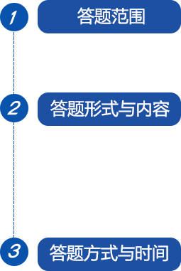

全国水利系统干部职工及社会公众。
采用线上答题的形式。试题类型分为单项选择题30题、多项选择题10题、判断题10题，共50题，每题2分，满分100分；答题时间90分钟。
试题内容包括《中华人民共和国水法》《中华人民共和国防洪法》《中华人民共和国水土保持法》《中华人民共和国长江保护法》《中华人民共和国黄河保护法》及《中华人民共和国河道管理条例》《地下水管理条例》《节约用水条例》等相关知识。
答题者可在水利部官网或“中国水利”“法治水利”微信公众号，点击“2025年‘世界水日’‘中国水周’涉水法律法规知识网络答题活动”专栏，进行注册并在线答题。
答题通道将于3月22日8：00开通，4月22日17：00同步关闭。
答题成绩在85分（含）以上者可下载“学时证明”，经所在单位人事部门核实后，按4学时登记培训学时。每人答题以最后一次提交所得成绩为最终成绩。证书下载请访问“水利部官网电脑版-互动-网上答题”，登录本次答题下载证书。
|
 京公网安备11040102700040号
京公网安备11040102700040号